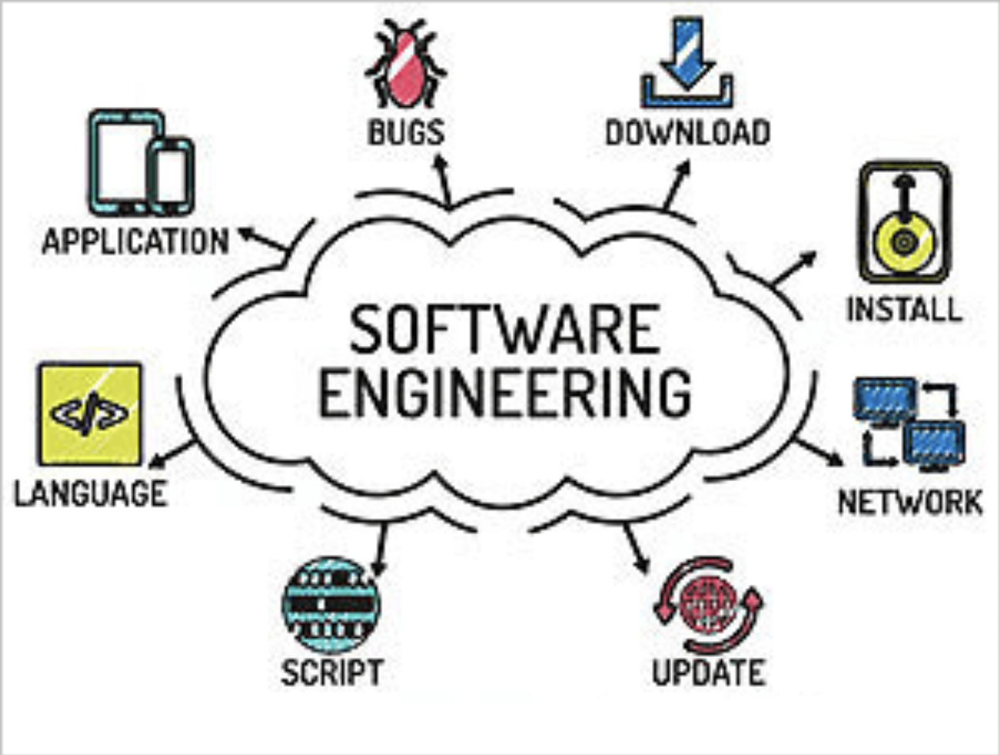

My experience first learning what the essential skills are for software engineers was very educational and exciting to me. I’ve aquired skills with fundamental software engineering concepts that include coding standards, functional programming, user interface frameworks, design patterns, and many more. As a college student, I aspire to become an software engineer some day and this experience espically helped me understand key concepts in the tech field. I was afriad that I would not be able to keep up and learn all the skills but I was wrong. I was able to learn something new every week and continue to apply it to my coding assignments as weeks go by. Although I was not able to master all the skills, atleast I have the basics down.
Open source software development is a type of software development that allows anyone to view, edit, and improve the code. Open source projects thrive on community contributions where programmers improve upon the source code and share the changes within the community. Developers from around the world collaborate to improve the software by fixing bugs, adding features, and enhancing its functionality. This communal effort often leads to rapid innovation and higher-quality software. It is a great way to learn from other programmers and to help each other out. Many brains are better than one. With the many brains and eyes reviewing the code, bugs and errors can visibly be identified better and fixed more rapidly compared to closed-source projects. Overall, open source software development represents a powerful model that promotes collaboration, innovation, and accessibility in the software engineering field.
Coding standards are a set of guidelines and programming styles that developers adhere to when writing source code for a project. This is not the first time I got introduced to coding standards but when taking the introduction to software engineering class at University of Hawaii at Manoa, I got introduced to another tool which is ESLint with IntelliJ. Coding standards are crucial because its a way to communicate with other programmers and have a greater understanding of the code. It is extremely important to making coding assignments well-organized and easy to read. Coding standards include indentation, naming conventions, comments, and many more. Coding standards are integral to producing high-quality, maintainable, and reliable software.
Functional programming is a programming paradigm where programs are constructed by applying and composing functions. It is a style of building the structure and elements of computer programs that treats computation as the evaluation of mathematical functions and avoids changing-state and mutable data. It is a declarative programming paradigm, which means programming is done with expressions or declarations instead of statements. The benefits of functional programming include easier debugging, easier testing, and easier maintenance.
The knowledge and skills I have learned in this class will help me with my journey to become a software engineer. Software engineering is not only about web application development but it goes way beyond that. For more information about UI frameworks, coding standards, and design patterns. Check out my other essays I wrote about them on my essays page. I am extremely excited extend my knowledge on the skills thats needed to be a software engineer and how to apply it to my future career.